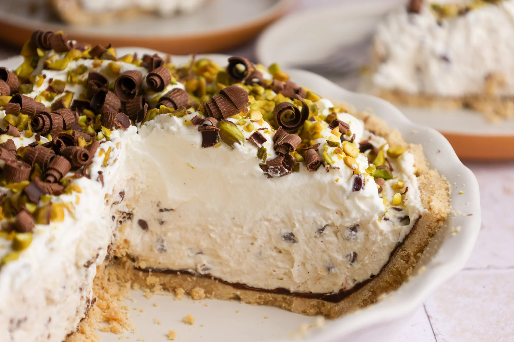

Cannoli Pie

Description
Cannoli pie is a decadent twist on the classic Sicilian dessert, combining all the best elements of traditional cannoli into a luscious, indulgent treat. Picture a buttery, golden graham cracker or pastry crust filled to the brim with velvety ricotta and mascarpone cream, delicately sweetened with a hint of vanilla and citrus zest. Each bite offers a rich and creamy texture balanced by the crisp, flaky base, creating an irresistible harmony of flavors and textures. It's topped with a scattering of mini chocolate chips, chopped pistachios, or candied orange peel, adding a delightful crunch and vibrant color to every slice.
The magic doesn't stop there - this pie elevates the iconic cannoli into a show-stopping dessert centerpiece. Dusted with powdered sugar and drizzled with a luscious chocolate sauce, it's as stunning as it is delicious. The filling, infused with hints of cinnamon and amaretto, delivers a depth of flavor that transports you straight to an Italian café. Whether served at a festive gathering or enjoyed as a comforting treat at home, cannoli pie is a celebration of Italian culinary artistry, leaving an unforgettable impression with its creamy, nutty, and subtly spiced perfection.
Ingredients
Crust
- 8 waffle cones, slightly crushed
- 1/2 cup roasted pistachios
- 1 tablespoon granulated sugar
- 7 tablespoons unsalted butter, melted
- cooking spray
Filling
- 1/4 cup salted roasted pistachios, plus chopped pistachios for garnish
- 1 1/2 cups whole milk ricotta
- 1 cup mascarpone cheese
- 1 cup unsifted powdered sugar
- 1/2 cup miniature semisweet chocolate chips, plus more for garnish
- 2 teaspoons grated orange zest, plus more for garnish
- 1 teaspoon vanilla extract
- 1/4 teaspoon kosher salt
- 1 cup heavy whipping cream
Steps
- Prepare the Crust: Pulse waffle cones, pistachios, and sugar in a food processor until mixture is finely ground, about 20 (1-second) pulses. Add butter, and pulse until mixture holds together when squeezed, about 10 (1-second) pulses, stopping to scrape down sides as needed.
- Lightly coat a 9-inch deep-dish pie plate with cooking spray, and transfer waffle cone mixture to prepared pie plate, pressing evenly into bottom and up sides of pie plate. Freeze Crust, uncovered, until set, about 15 minutes.
- Meanwhile, prepare the Filling: Finely chop pistachios, and transfer to
a medium bowl. Add ricotta, mascarpone, powdered sugar, chocolate chips, orange zest, vanilla, and salt. Stir until combined, and set aside at room temperature.
- Beat heavy cream with an electric mixer on medium-high speed until medium peaksform, 2 to 3 minutes. Spoon whipped cream into ricotta mixture, and gently folduntil just combined.
- Spoon ricotta mixture into prepared Crust, and spread in an even layer with a rubber spatula or offset spatula. Cover with plastic wrap, and refrigerate, uncovered, until set, at least 4 hours or up to 8 hours.
- Remove pie from refrigerator; remove plastic wrap, and garnish with additional chopped pistachios, chocolate chips, and orange zest.
Eccellente!
Home